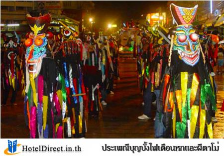
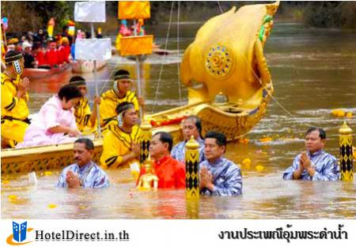

TYPE html>
ประเพณีในจังหวัดเพชรบูรณ์
ประเพณีในจังหวัดเพชรบูรณ์
1.ประเพณีบุญบั้งไฟเดือนหกและผีตาโม่
ในช่วงก่อนฤดูฝนของทุกปี อำเภอหล่มเก่า ได้จัดเทศกาลบุญบั้งไฟขอฝนและผีตาโม่ ซึ่งเป็นความเชื่อของคนสมัยโบราณที่มีประวัติมายาวนานของผู้คนในท้องถิ่นอำเภอหล่มเก่า ซึ่งเป็นผีที่คอยสิงสถิตอยู่ตามบ้านเรือน ป่าเขาลำเนาไพร ชาวบ้านที่บ้านนาทราย จึงได้จัดขบวนแห่ผีตาโม่ขึ้น ในเทศกาลบุญบั้งไฟเดือนหก เพื่อให้ฝนตกต้องตามฤดูกาล อันจะทำให้เกิดความอุดมสมบูรณ์ ของพืชพันธุ์ธัญญาหารและความอุดมสมบูรณ์
ลักษณะของผีตาโม่ จะมีลักษณะที่น่ากลับ ตาโตแดงกล่ำ ปากกว้างเท่ากระด้ง ฟันขาว มีลิ้นยาวห้อยลงคล้ายเปรต จมูกกลมใหญ่คล้ายกระบวยตักน้ำ มีหูยาวคล้ายเขาควาย ใส่เสื้อผ้าชุดดำผ้าแดงคาดเอว มือเท้าใหญ่ถืออาวุธ พุงใหญ่อุ้ยอ้าย มีลักษณะความแตกต่างระหว่างผีตาโขนและผีตาโม่ คือ หวดหนึ่งข้าวเหนียวที่ใช้ทำหน้ากาก ผีตาโขนจะใส่โดยคว่ำปากหวดนึ่งข้าวเหนียวลง
ประเพณีอุ้มพระดำน้ำ
งานประเพณีอุ้มพระดำน้ำ เป็นงานประเพณีเก่าแก่ของ ชาวจังหวัดเพชรบูรณ์ ที่สืบทอดกันมายาวนานชั่วอายุคน เป็นประเพณีที่แปลกไม่มีปรากฎในที่อื่น ๆ ในวันสารทไทยของทุกปี ชาวเพชรบูรณ์จะเดินทาง ไปร่วมพิธีกันอย่างคับคั่ง ประเพณีอุ้มพระดำน้ำ เมื่อก่อนมีการ เรียกชื่อแตกต่างกันไป
เช่น อุ้มพระดำน้ำ อุ้มพระสรงน้ำ บางคนก็เรียกว่างานประเพณีสารทไทย วัดไตรภูมิ หรือ ประเพณีอัญเชิญ พระพุทธรูปสรงน้ำก็มี จนกระทั่งเดือนตุลาคม 2528 ทางคณะกรรมการได้ร่วม ประชุมกันอย่างกว้างขวาง เพื่อหารือเกี่ยวกับ การจัดงานเป็นทางการ และมีมติให้ใช้ชื่องานว่า งานประเพณี “อุ้มพระดำน้ำ”
ประเพณีเส็งกลองล่องโคมไฟไหว้พ่อขุนผาเมือง จังหวัดเพชรบูรณ์
 ประเพณีเส็งกลองล่องโคมไฟไหว้พ่อขุนผาเมือง เป็นประเพณีท้องถิ่นของอำเภอหล่มสัก ประกอบไปด้วยกิจกรรมการเส็งกลอง คือการแข่งขันตีกลองยาว และตีกลองสองหน้า ว่ากลองลูกไหนจะมีเสียงไพเราะกว่ากัน ซึ่งการเส็งกลอง เป็นการละเล่นที่นิยมมาตั้งแต่ในอดีตของชาวเพชรบูรณ์ สำหรับการล่องโคม หมายถึง การลอยโคมไฟ เชื่อกันว่าเป็นการบูชาเทพยดาบนสวรรค์มักนิยมล่องโคมไฟกันในช่วงวันออกพรรษา
กิจกรรมนี้จัดขึ้นในช่วงระหว่างวันที่ 29 ธันวาคม- 2 มกราคมของทุกปี บริเวณลานอนุสาวรีย์พ่อขุนผาเมือง ภายในงานมีกิจกรรมที่น่าสนใจ เช่น การประกวดเส็งกลอง การล่องโคมไฟ การรับประทานอาหารพื้นเมือง และการละเล่นพื้นเมืองต่าง ๆ
ประเพณีเส็งกลองล่องโคมไฟไหว้พ่อขุนผาเมือง เป็นประเพณีท้องถิ่นของอำเภอหล่มสัก ประกอบไปด้วยกิจกรรมการเส็งกลอง คือการแข่งขันตีกลองยาว และตีกลองสองหน้า ว่ากลองลูกไหนจะมีเสียงไพเราะกว่ากัน ซึ่งการเส็งกลอง เป็นการละเล่นที่นิยมมาตั้งแต่ในอดีตของชาวเพชรบูรณ์ สำหรับการล่องโคม หมายถึง การลอยโคมไฟ เชื่อกันว่าเป็นการบูชาเทพยดาบนสวรรค์มักนิยมล่องโคมไฟกันในช่วงวันออกพรรษา
กิจกรรมนี้จัดขึ้นในช่วงระหว่างวันที่ 29 ธันวาคม- 2 มกราคมของทุกปี บริเวณลานอนุสาวรีย์พ่อขุนผาเมือง ภายในงานมีกิจกรรมที่น่าสนใจ เช่น การประกวดเส็งกลอง การล่องโคมไฟ การรับประทานอาหารพื้นเมือง และการละเล่นพื้นเมืองต่าง ๆ